石门二路街道志愿者自治慈善超市
- 石门二路街道慈善超市，是一家完全由自愿者自治的慈善超市，我们的目标是成为一家“美好家园自治店”。-
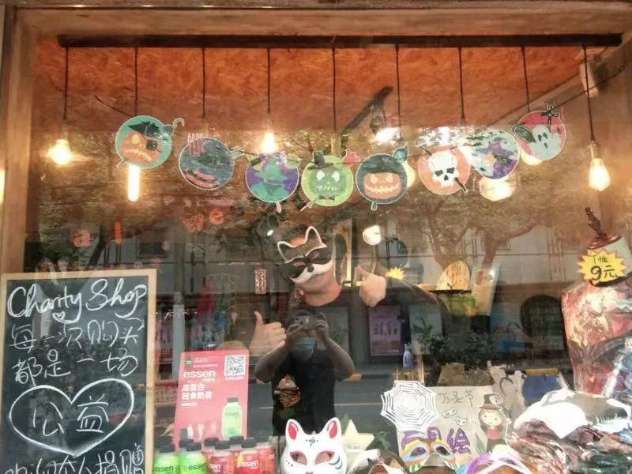
这是一个不起眼的小店，
卖着许多并不完美的闲置商品，
经营者也许是与你毫不相干的人，
但是这些不起眼、不完美、不相干，正努力为你创造一个美好家园，
石门二路街道志愿者自治慈善超市。
石门二路街道“美好家园志愿店”为何如此特别？
坐落于上海市石门二路街道新闸路1132号的善淘“美好家园志愿店”由善淘全职残障伙伴作为联络员&培训人员，由善淘残健融合的一支闲置募资团队负责物资供给不断，日常运营由一支逾50人的社区志愿者团队负责维护，这些志愿者从18岁到60余岁，年龄跨度50岁，志愿者中也有一些特殊伙伴，他们每周服务8-24小时不等，在店铺里活力十足，每天迎来送往，保持这店铺的可持续能量，还创设了许多有趣有益的艺术改造和社区融合活动。
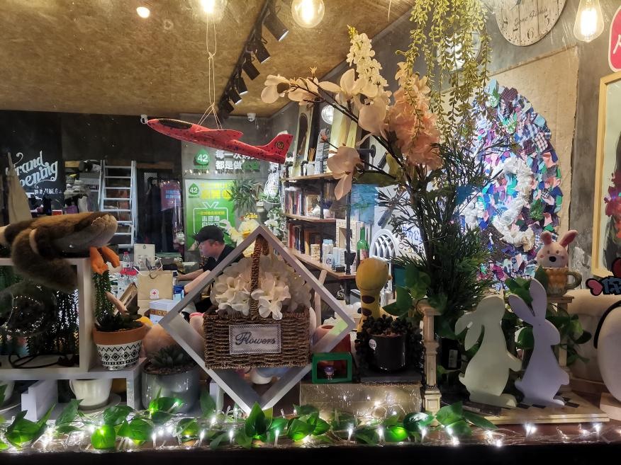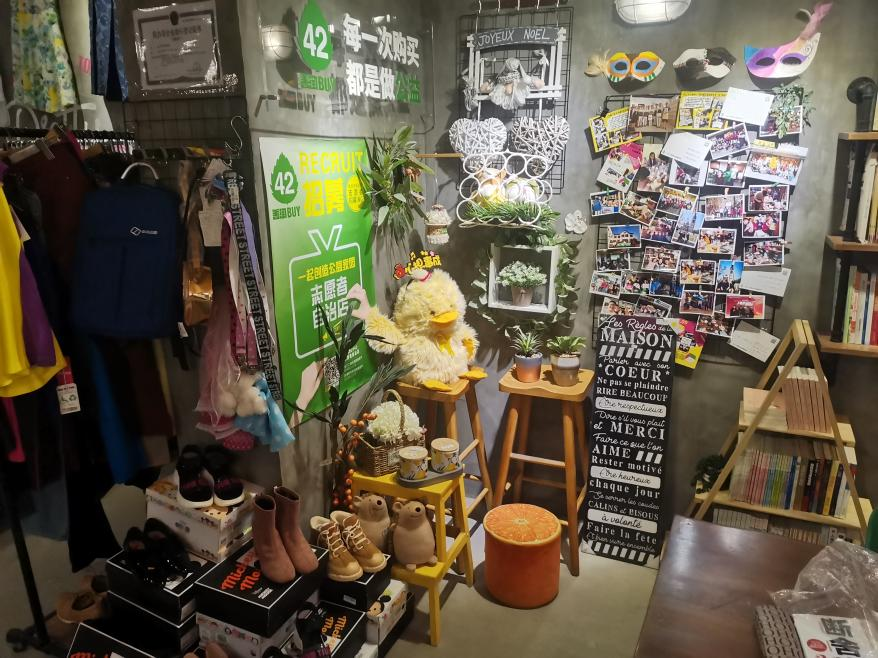
石门二路街道社区“美好家园店”的零售所得零售所得支持残障伙伴就业、店铺的可持续经营，还打造了一支社区营造公益项目的微基金——家园。这笔公益基金，是用对闲置空间的改造、一件件闲置物资售卖和一个个志愿服务的小时数积攒而来，这是一支真正的“取之于民、用之于民”的可持续的公益基金。
“美好家园志愿店”想营造的是怎样的社区？
社区营造是最近社会创新领域的大热概念，但我们不希望它流于空洞的概念，首先需要定义的是我们期望营造的究竟是怎样的社区？
善淘相信“人与人之间没有高下，只有不同”，善淘想要营造的社区如我们的理念所说的那样——全纳 All inclusive。我们曾说“慈善商店是失落者的家园”，但有粉丝告诉我们“即使是失落者的家园，也让人羡慕，要知道有的人连家园都没有。”这样的分享让我们感慨，善淘理想的全纳社区是这样的——无论你多么的“不同”与“小众”，你的需求会被看到、会被尊重，当你走在阳光下，你会昂首，会感受到我是这个社区的主人，我属于这里。老人、孩子、特殊伙伴、城市外来者、贫困者、多元人群，要知道，想在偌大的城市空间里拥有这种感觉并不容易。善淘创设“美好家园志愿店”就是为了打造这样美好城市家园，让这样温暖的小店走进中国的每一个社区。
打造一家“美好家园志愿店”可以改变什么？
影响力指标一：从卧床不起到成为美好家园志愿店的带领者
许玮，30岁致残，卧床数年，无法离家活动，在重病的时候，父亲离世，一度陷入人生灰暗。通过复健慢慢活动后，在家里从事线上的游戏直播工作，但没有办法开展正常的社交活动。
善淘邀请许玮加入后，从店铺兼职开始，培养他慢慢成为店长到现在的美好家园志愿店的领导者。如今，他领导了一支超过50人的志愿者团队，他为美好小店提供的服务包括——志愿者培训、志愿者团队文化建设、店铺管理标准化制度的建设、“家园”基金的设计、策划和执行等等。现在他每周的工作时间超过60小时，即使非工作时间他愿意到店里与志愿者、顾客一起待着。
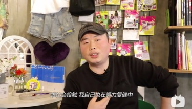
他说：“我以前以为自己可能就这样在一个地方一辈子了，现在我竟然到处跑了起来。我希望我的身体还能更好一点，这样我可以承担更多。”
美好家园志愿店为这样愿意自力更生、具有成长型思维的特殊伙伴提供了平台，给他们提供了平等的有尊严的工作岗位，获得成就感和持续突破困境不断成长的勇气。
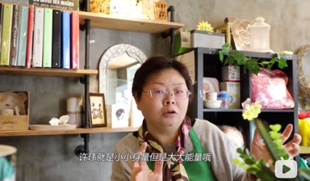
影响力指标二：志愿者的改变——从“大人物”到“小人物”，从“平凡”到“独特”
在善淘美好家园志愿店当志愿者，是怎样一种体验？
他说：“虽然不在上班，但是比上班更来劲。”
她说：“我以前觉得自己很平凡，现在我相信每个人都能散发独特的光芒。“
她说：“ 我以前的梦想是成为一个大人物，现在，我开始思考优秀的真正意义。”
他说：“我一个人生活在上海，在善淘，我不再感到孤独。”
……
你相信吗？每一个志愿者都可以成为这家店铺的主人，他们可以按照自己的喜好与特长去布置店铺，所以，美好家园志愿店的店铺风格多变、橱窗天天焕新。
每一个志愿者都有自己的个性，每一个志愿者都想留下一些什么。渐渐的，店铺变得有趣，变得有个性，变得像一个家。志愿者就是店铺的主人，让这个家变得温馨和谐。
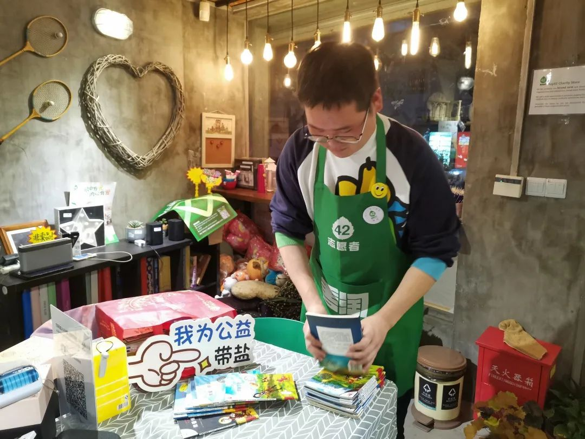
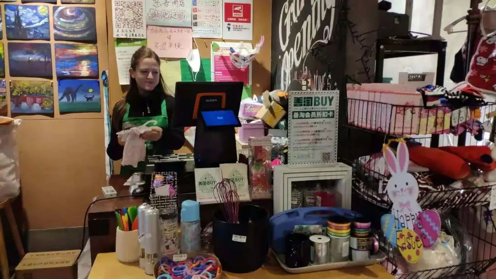
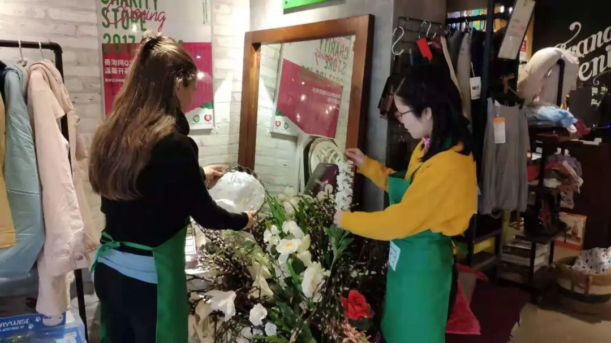
您相信吗？志愿者是魔法师，能让闲置的物品变成艺术品。
你没看错，一张张闲置的鼠标垫变成了一幅幅多彩的画，在过去一年，志愿者们打造了鼠标垫艺术改造工作坊，哪怕是没有任何绘画基础的人，都可以跟着我们的魔法师一起挥洒想象力。将鼠标垫变成艺术品。
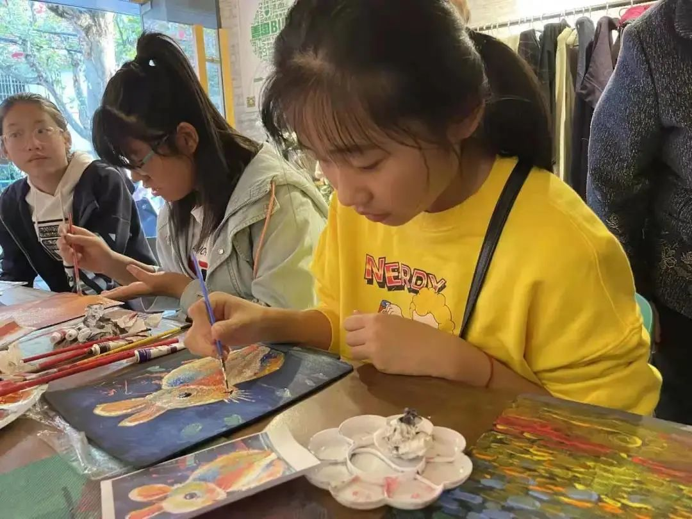
下面这幅42则是志愿者们用无法出售的闲置布料进行拼布艺术改造而成，现在它成了店铺里最闪光的装饰品。
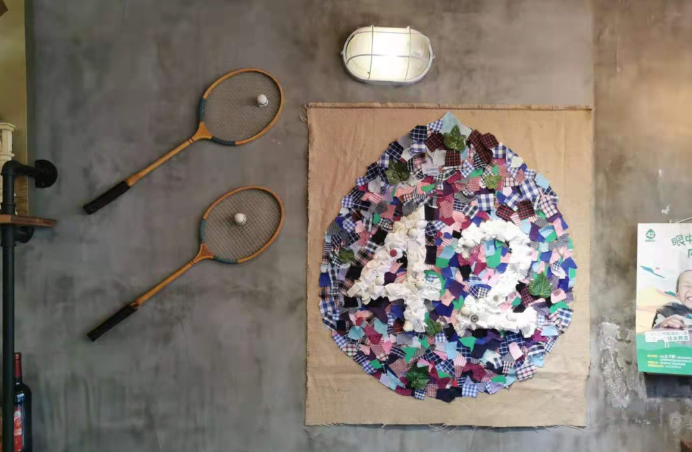
你相信吗？现在石门二路街道志愿者自治慈善超市的每一位志愿者能影响一千个人。
是的，经过志愿者的努力，我们用店铺所得打造了自己的社区营造微公益基金“家园基金”。志愿者每周贡献8小时，可以成就社区里可持续的公益项目，成就感爆棚。志愿者的触角不只是在店铺内——希望改变的是整个社区，甚至是整个世界。对，我们就是这么有能量的志愿者。
影响力指标三：把固定的物理空间变成流动的“取之于民，用之于民”的公益基金——“家园”和“远方”
石门二路街道志愿者自治慈善超市通过美好社区志愿店的高效运营，我们产出可持续的收益，用店铺收益资助在我们的美好家园志愿店内及所在社区开展公益项目。
从小预算开始、始于社区、发起人有一颗追求真实价值的赤诚之心、坚持不懈，善淘相信——有益的社会服务创新可能始于任何预算。
我们寻找的那些愿意牺牲自己休息时间服务弱势群体，那些能够关照比自我更大一点天地的社区创新者。第一期，我们选出了五个植根社区的公益项目——社区孤老服务、生命急救培训、社区流浪动物救治、困境儿童游戏心理赋能、物尽其用的环创项目。一期项目的开展服务人次可逾千。
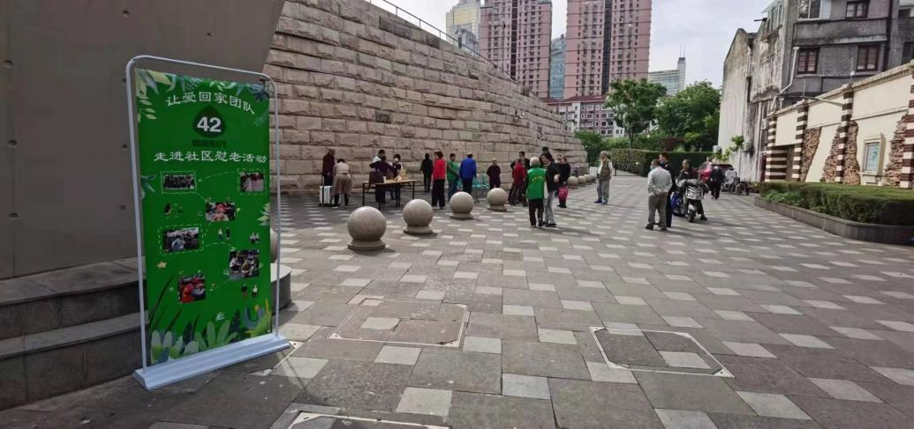
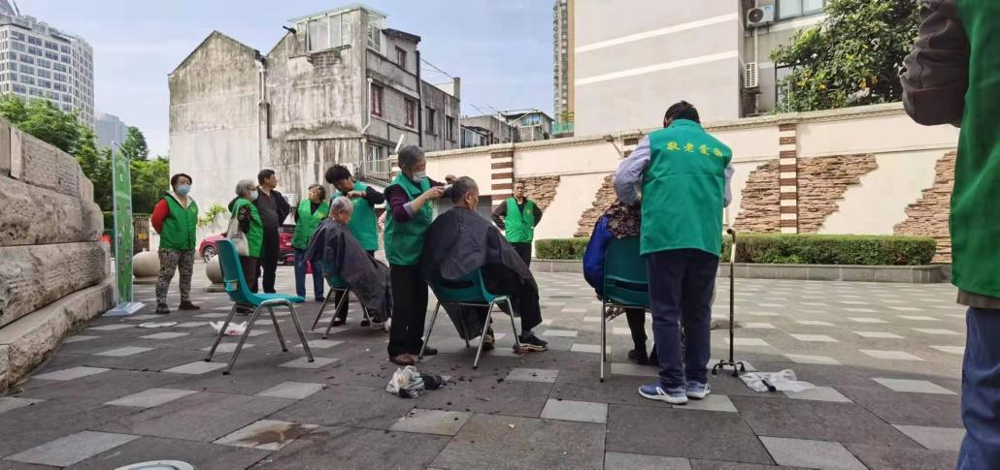
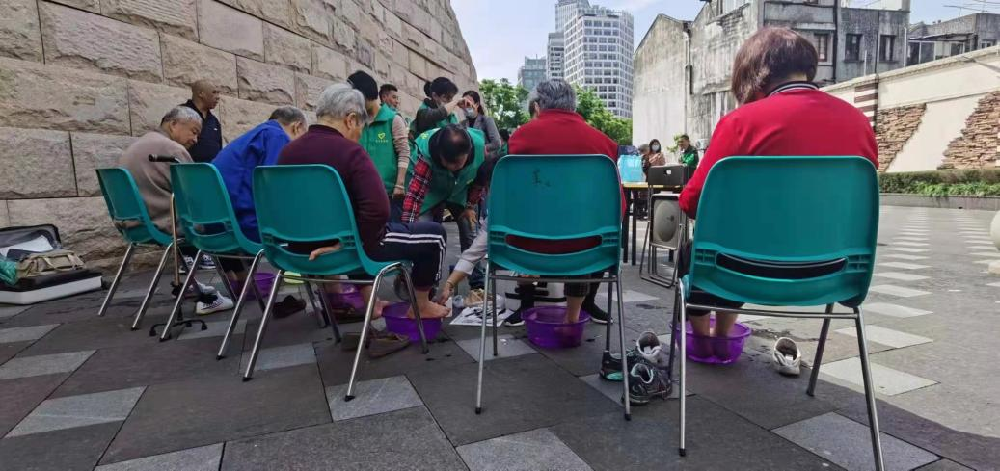
让爱回家团队走进社区慰老服务
（给社区的老人们带去最需要便捷的扦脚和理发服务）
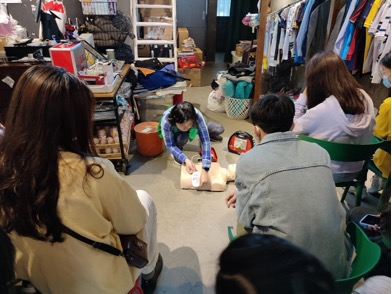
让爱申守急救知识普及活动
（叶育老师正在石门二路街道慈善超市现场宣讲）
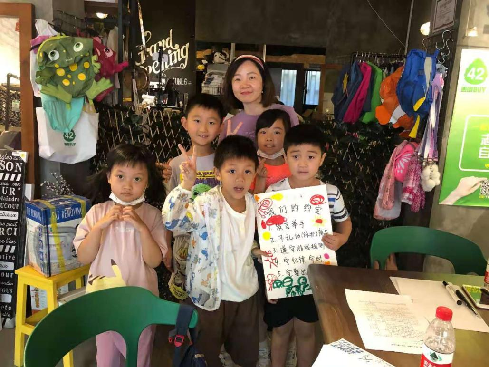
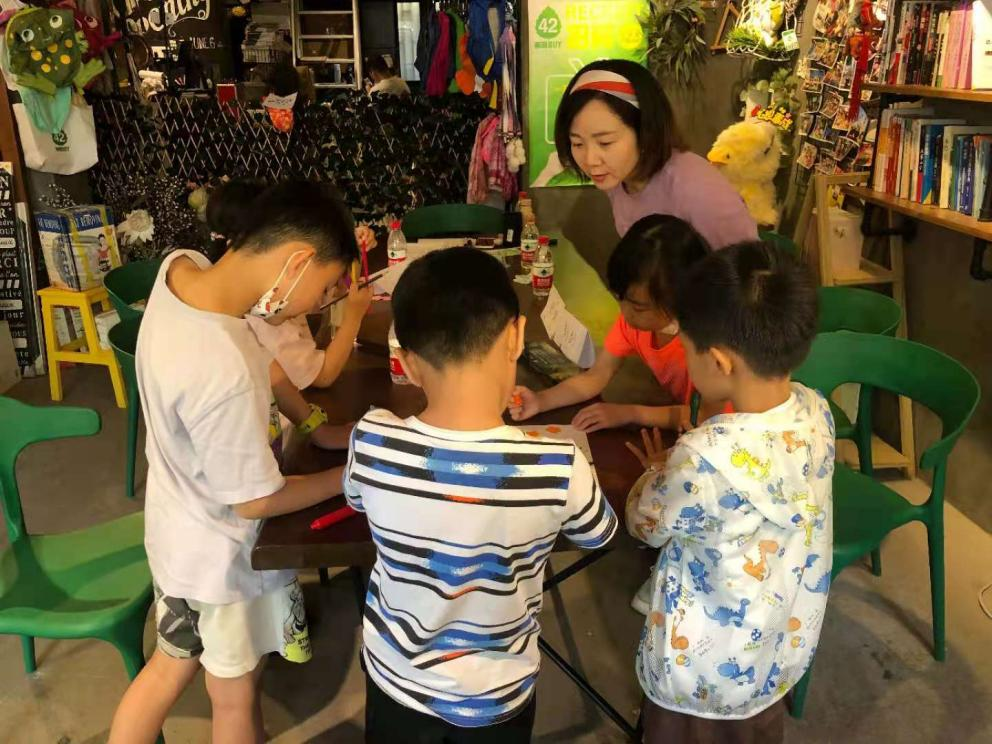
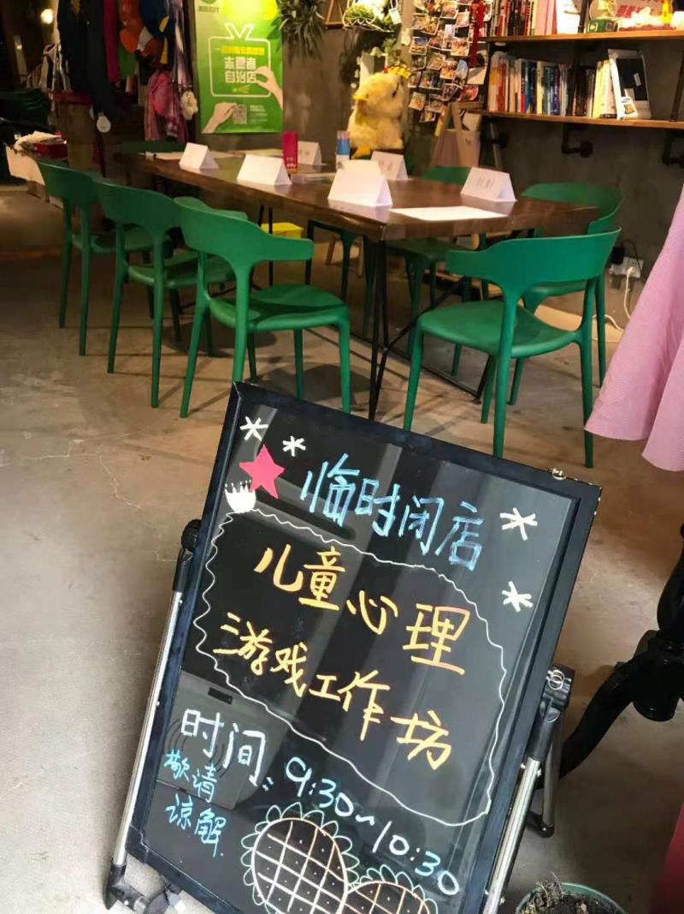
税老师的儿童心理赋能游戏工作坊
（为受困的孩子们带去的强大的心理赋能）
石门二路街道志愿者自治慈善超市还成为里链接闲置资源与乡村困难群体需求之间的城市链接点。今年年初，店铺将在城市里筹集的闲置品牌冬衣精准捐赠给了云南、贵州、甘肃、福建四个省的数十个中小学，短短一个月的时间，我们总共捐赠出了6400件冬衣，总价值超过255万元。
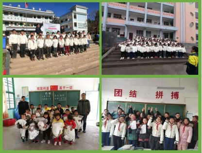
近期，石门二路街道志愿者自治慈善超市又孵化出“远方”公益基金，作为主要发起方，为所在社区援建的云南阿猛县筹集乡村绘本教室。为了实现美好家园志愿店所援建的云南阿猛镇中心小学希望有一个乡村绘本教室的愿望，善淘向店铺所在街道和社区的居民发起募捐闲置，仅仅一个月，一共募集儿童书籍2649册，完成阿猛镇中心幼儿园建设乡村绘本教室的需求。
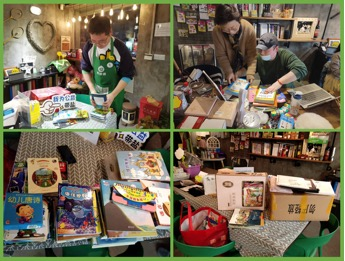
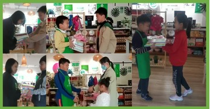
在6月底，善淘响应建党一百周年的号召，携手石门二路街道，开展了：建设美丽中国，推进乡村振兴，静安对口帮扶云南砚山志愿者服务活动。石门二路街道慈善超市的志愿者成立了“情系家园，心怀远方”志愿者团队，由善淘主理人蒋抒洁，运营总监叶剑华，志愿者团队负责人许玮，带领五个志愿者前往云南砚山阿猛镇开展绘本教室建设改造活动。
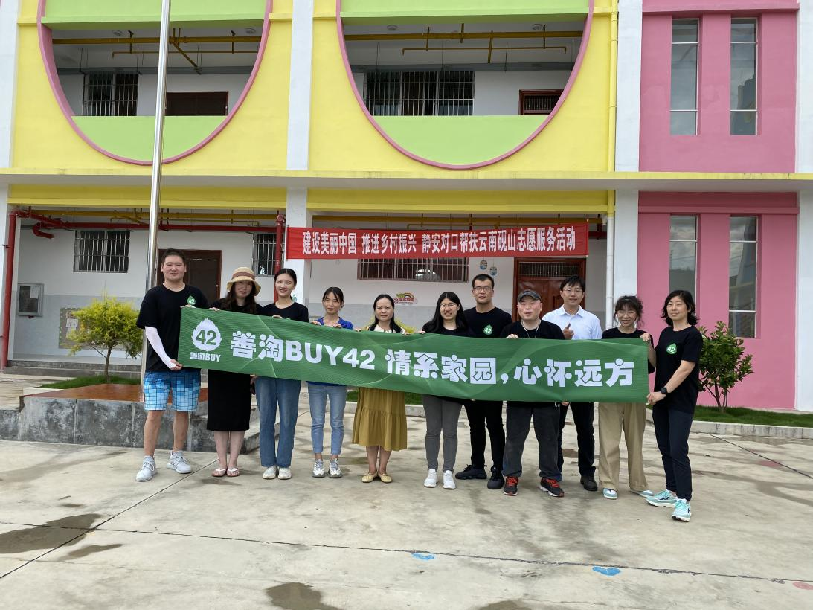
善淘的志愿者们不但要亲手把书本带给云南砚山阿猛镇中心幼儿园的小朋友手里，还要给小朋友带去一系列绘本故事课程，儿童保护课程和给老师准备的急救的课程，以及绘本教室的搭建。
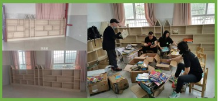
改造前
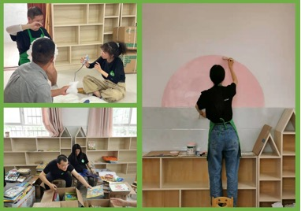
改造中
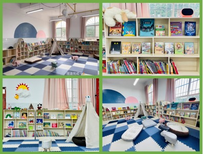
完成改造
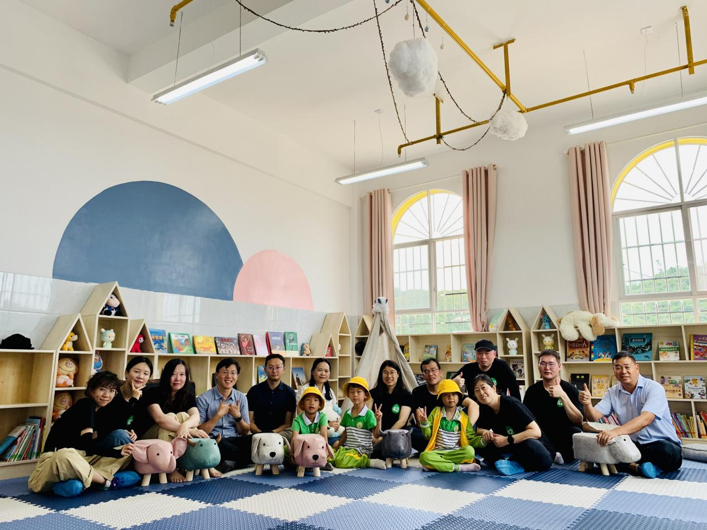
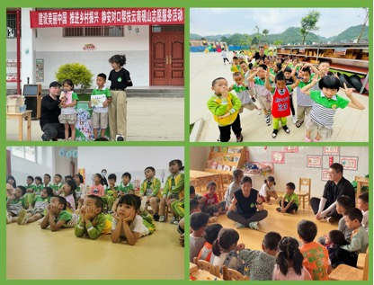
志愿者授课
经过七天志愿者们的努力，将课程完美的结束并举行了结业典礼。
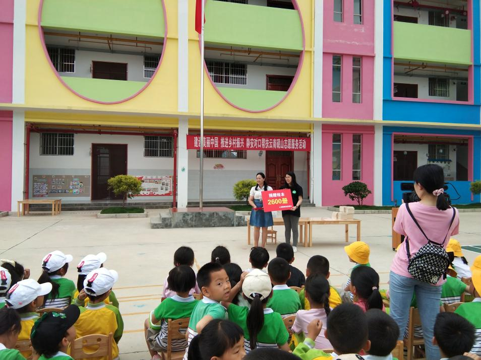
并受到了当地政府相关部门的支持，以及媒体的关注，获得了比较大的社会影响力。
让这样的美好家园志愿店走进更多社区，需要你的支持！
每培育一家美好家园志愿店，我们可以——
·使1-2名残障伙伴联络员获得持续的就业机会，可以极大地提高他们的领导和管理能力，增强他们的自尊和自信；
·每年可以吸纳数十位志愿者参与到社区自治的工作来，使他们获得个人成长的同时，促进社区融合；
·我们还可以用店铺收益支持3-10个小微公益项目的开展，公益项目的覆盖人次可以达到千人以上。
媒体报道：
https://m-ysyun.ynurl.com/p/10752.html
https://www.sohu.com/a/473995714_120823584
志愿者团队招募：
https://mp.weixin.qq.com/s/NuB81DNHqypLqNmO8XBz7A
https://mp.weixin.qq.com/s/UoCOpRBYzF02gqZcPzFw9w
https://mp.weixin.qq.com/s/wkgCOYInG-5i7uxeych0eQ
https://mp.weixin.qq.com/s/69cY9Mlp-Wc29Byi3teuIA
棉衣捐赠：
https://mp.weixin.qq.com/s/4RkMeeE3BGLeEupS8cbOPA
远方基金项目阿猛镇绘本募集：
https://mp.weixin.qq.com/s/S94rzPXMuXTNSTxoLQ-yvg
https://mp.weixin.qq.com/s/2oSW6qc52XK81J-o23sjcw
https://mp.weixin.qq.com/s/QbK5-eaPbA6qqszI9dsHvA
家园基金项目：
https://mp.weixin.qq.com/s/N_IxzMo2O66RtdFrlCaeNw
https://mp.weixin.qq.com/s/YYv33I201cSuKTmVQVJeyQ
https://mp.weixin.qq.com/s/gzPdqoeDtJkPg7-G1LqcwA
https://mp.weixin.qq.com/s/9cypH3lpuVr2HK1NrVpmfQ
B站视频：
https://www.bilibili.com/video/BV1k64y127G8?from=search&seid=9021837509380056670